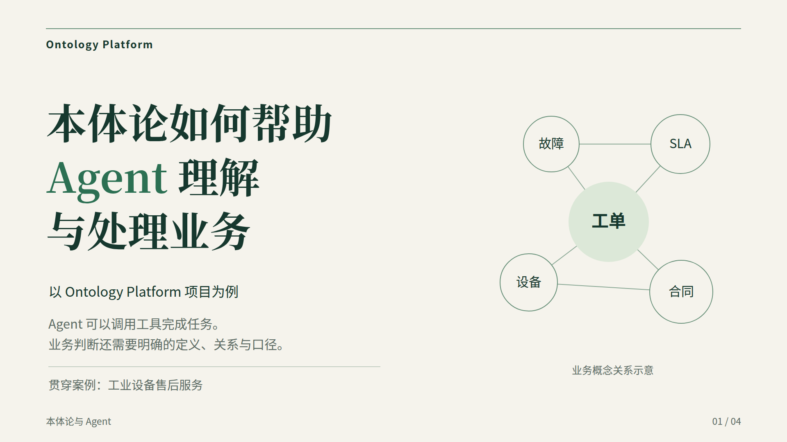
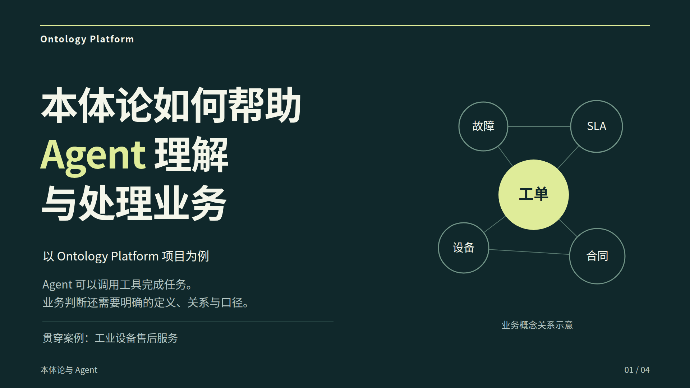
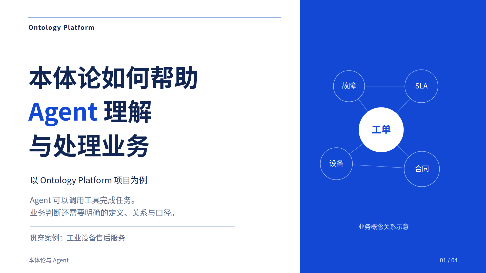

商务编辑版
暖白、森林绿与宋体大标题。适合业务、产品与技术混合受众，叙事清晰。
第一部分：封面、Agent 任务流程、SLA 业务口径与已有方法。
三种风格，均为完整的四页演示；想要更强的演讲表现力，建议先查看深色演讲版。

暖白、森林绿与宋体大标题。适合业务、产品与技术混合受众，叙事清晰。

深色画布、明亮文字与黄绿色强调。适合全屏演讲，页面对比更强。

蓝白配色与无衬线标题。适合正式汇报，风格简洁，信息结构明确。
打开后用 → / 空格 逐步展示；← 返回；A 显示本页全部内容；F 全屏；N 查看原稿讲解备注。
按 E 编辑文字，用 Ctrl+S 下载修改后的 HTML。网页可离线打开，PDF 为静态全内容版本。